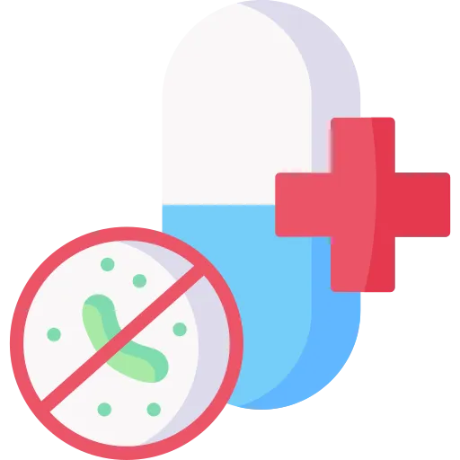

The toxicity that goes with each class, the two drugs you monitor by blood level, and the order that decides whether the culture was worth drawing.
Anti-infectives look like a memorisation problem. They are not. There are about ten classes, and each one owns a toxicity with a name.
Learn the named toxicities and the timing rules. The drug lists follow.
Points get lost here in three predictable ways. Read these before anything else.
One dose can sterilise the specimen. Then nobody knows the organism, and nobody can narrow the therapy.
So the rule is culture first. It costs about two minutes.
The rule has a limit, and the limit is the point of the question. A septic patient does not wait. If drawing the culture would delay the first dose in sepsis, give the drug and collect what you can.
Nobody asks you what vancomycin does to the cell wall. They ask what the flushing means.
Vancomycin has an infusion reaction. Aminoglycosides take hearing. Fluoroquinolones rupture tendons. Sulfonamides start a rash that can turn serious.
Four toxicities, four classes. That is most of the drug questions you will see.
Bacteria in the urine with no symptoms is asymptomatic bacteriuria. You do not treat it. The only routine exceptions are pregnancy and the run-up to a urologic procedure.
The mirror image is the patient who stops early because they feel better. A course is prescribed for a length, not until symptoms go.
For every class below, you should be able to say four things with the book closed. What it covers in one sentence. The classic use. What you monitor or check. The teaching point you give the patient.
If you cannot say all four out loud, you do not know it yet. Familiarity is not recall.
| Class | What it covers | Classic use | What you monitor or check | Teaching point |
|---|---|---|---|---|
| Penicillins | Broad gram-positive cover, plus gram-negatives with the extended agents. | Strep throat, syphilis, endocarditis, endocarditis prophylaxis. | Allergy history before every dose. Watch the first dose. | Finish the whole course, even once you feel well. |
| Cephalosporins | Cell wall drugs; later generations trade gram-positive cover for gram-negative. | Cefazolin before surgery, ceftriaxone for meningitis and pneumonia. | Penicillin allergy history. Renal function. | Avoid alcohol with cefotetan and its relatives. |
| Vancomycin | Gram-positive only, including MRSA. | IV for MRSA. Oral only for C. difficile. | Trough level, creatinine, urine output, hearing. | Flushing during the infusion means slow it, not stop it forever. |
| Aminoglycosides | Serious gram-negative infections. | Gentamicin or tobramycin for gram-negative sepsis. | Peak and trough, creatinine, hearing and balance. | Report ringing, fullness or dizziness the same day. |
| Macrolides | Atypical organisms and gram-positives. | Azithromycin for community-acquired pneumonia and pertussis. | QT interval and other QT-prolonging drugs. | Tell the provider about every other medicine you take. |
| Tetracyclines | Atypicals, tick-borne illness, acne. | Doxycycline for Lyme disease and Rocky Mountain spotted fever. | Age, pregnancy status, and what else is being swallowed with it. | No dairy, antacids or iron near the dose. Use sunscreen. |
| Fluoroquinolones | Broad gram-negative, some gram-positive. | Ciprofloxacin for complicated urinary infection. | Tendon pain, blood glucose, QT interval. | Stop and call for calf or heel pain. Do not exercise through it. |
| Sulfonamides | Broad cover; strong for urinary and skin infections. | Trimethoprim with sulfamethoxazole for urinary infection and PCP. | Skin, potassium, and fluid intake. | Drink 2 to 3 litres a day. Report any new rash immediately. |
| Metronidazole | Anaerobes and protozoa. | Bacterial vaginosis, trichomoniasis, intra-abdominal infection. | Alcohol exposure, including mouthwash and cough syrup. | No alcohol during the course or for 3 days after. |
| Clindamycin | Anaerobes and gram-positives; an option in penicillin allergy. | Skin and soft tissue infection, dental infection. | Stool pattern. New watery diarrhoea is the red flag. | Report diarrhoea rather than treating it yourself. |
| Antivirals | Herpes family and influenza, not bacteria. | Acyclovir for shingles, oseltamivir for influenza. | Creatinine on acyclovir. Symptom onset time on oseltamivir. | Start early. Late is the same as not treated. |
| Antifungals | Yeasts and moulds. | Fluconazole for candidiasis, amphotericin B for severe systemic disease. | Creatinine, potassium, magnesium, liver enzymes. | Chills during an amphotericin infusion are expected and treatable. |
One index card, by hand. Class on the left, named toxicity on the right. Vanc is the infusion. Aminoglycosides are the ears. Quinolones are the tendons. Sulfa is the skin. Flip the card and you have the drug section.
Discrimination axis: what the allergy actually was.
Both groups break the bacterial cell wall. Both are bactericidal. Neither is the hard part.
The hard part is the allergy question, and it turns on one thing. What happened when the patient took it before.
Penicillin allergy is the most commonly reported drug allergy. Most of what is reported is not allergy.
Nausea is not an allergy. Diarrhoea is not an allergy. A vague childhood story is often not one either.
What you do: hold the drug, notify the provider, document exactly what happened and when.
What you do: report it, but it does not by itself label the patient allergic for life.
Immune or gut. Hives, wheeze and swelling are immune. Nausea and loose stools are the gut.
The question is almost never "is penicillin dangerous". It is "what did this patient describe, and does it stop you giving the drug".
Ask three things. What happened, how soon after the dose, and how long ago was it.
You were probably taught a scary number. It has come down a long way.
True cross-reactivity is low, in the range of a few percent at most. It is driven by a shared chemical side chain, not by the whole drug family.
The practical rules are short. A mild past reaction does not block a cephalosporin. A documented anaphylaxis to penicillin means you do not give a cephalosporin without the provider deciding, and preferably after allergy testing.
You do not need every drug. You need the direction the generations move in.
| Generation | Example | What it is for |
|---|---|---|
| First | Cefazolin, cephalexin | Skin and soft tissue, and surgical prophylaxis |
| Second | Cefuroxime, cefotetan | Respiratory and abdominal cover |
| Third | Ceftriaxone, ceftazidime | Serious gram-negative infection, meningitis, pneumonia |
| Fourth | Cefepime | Hospital-acquired infection, including Pseudomonas |
| Fifth | Ceftaroline | One of the few cephalosporins with MRSA activity |
As the generation number rises, gram-negative cover rises and central nervous system penetration improves. Gram-positive cover falls off along the way.
Discrimination axis: which levels you draw, and which organ pays.
These two get confused because they share two toxicities. Both hurt kidneys. Both hurt ears.
They are not interchangeable, and the separating features are clean.
Covers: gram-positives only, including MRSA. It does nothing to gram-negatives.
Levels: trough only. Draw it within 30 minutes before the next dose, once steady state is reached at about the fourth dose.
Toxicity: nephrotoxicity and ototoxicity, plus the infusion reaction.
Route quirk: oral vancomycin is not absorbed. That is exactly why it works for C. difficile, and why it is useless for anything outside the gut.
Covers: serious gram-negatives. Gentamicin, tobramycin, amikacin.
Levels: peak and trough. Peak is drawn about 30 minutes after the IV infusion ends. Trough is drawn within 30 minutes before the next dose.
Toxicity: nephrotoxicity and ototoxicity. Hearing loss can be permanent.
Route quirk: poorly absorbed orally, so systemic treatment is IV or IM.
Trough alone or peak and trough. Vancomycin is trough alone. Aminoglycosides are both.
Then the coverage. Vancomycin is the gram-positive drug and the MRSA drug. Aminoglycosides are the gram-negative drugs.
If a stem gives you a peak level, it is not vancomycin.
A trough is the lowest level in the dosing interval. It is drawn just before the next dose.
It answers one question. Is the drug clearing, or is it stacking up.
A peak is the highest level. It answers a different question. Is there enough drug to kill the organism.
Vancomycin troughs are commonly targeted around 10 to 20 mcg/mL, with the higher end used for serious infections such as bacteraemia, endocarditis and pneumonia. Many hospitals now dose by a calculated exposure target instead, so follow the local protocol and the pharmacist.
Gentamicin troughs are traditionally kept under 2 mcg/mL. A trough that is climbing means the kidneys are not clearing it, and that is your call to make.
Vancomycin given too fast releases histamine directly. This is not an immune reaction.
The picture is flushing and redness of the face, neck and upper trunk, with itching. Sometimes a drop in blood pressure.
The fix is the rate. Stop the infusion, notify, give an antihistamine as ordered, and restart at a slower rate.
Infuse at least 60 minutes for a 1 gram dose, and longer for larger doses. Slowing the infusion prevents it in the first place.
Flushing of the upper body during a fast infusion is the vancomycin infusion reaction. The drug is not abandoned. It is slowed.
Hives spreading everywhere, wheeze, throat swelling or a crashing blood pressure is anaphylaxis. That drug stops and does not go back in.
Speed of onset does not separate them. Distribution, airway involvement and the response to slowing the rate do.
Each of these owns one teaching point. Learn the teaching point and the class comes with it.
Azithromycin, clarithromycin, erythromycin. They cover the atypicals, so they show up in community-acquired pneumonia, pertussis and chlamydia.
The named risk is QT prolongation. Check what else the patient takes that also stretches the QT.
Erythromycin and clarithromycin inhibit liver enzymes, so they push up the levels of many other drugs. Azithromycin is the gentler one on the stomach and on interactions.
Doxycycline, minocycline, tetracycline. Used for tick-borne illness, atypical pneumonia, acne and chlamydia.
Three teaching points, and they come up constantly.
| Teaching point | Why | What you tell the patient |
|---|---|---|
| Not in young children | Permanent tooth staining and effects on developing bone | Generally avoided under age 8 and in pregnancy. The exception: doxycycline is the drug of choice for suspected Rocky Mountain spotted fever at any age |
| No dairy, antacids or iron near the dose | Calcium, magnesium, aluminium and iron bind the drug so it is not absorbed | Separate them by 1 to 2 hours |
| Photosensitivity | The skin burns far faster than usual | Sunscreen, hat, long sleeves, and no tanning beds |
One more practical point. Take the dose with a full glass of water and stay upright for about 30 minutes. Lying down straight afterwards can burn the oesophagus.
Ciprofloxacin, levofloxacin, moxifloxacin. Broad cover, excellent oral absorption, and a serious side-effect profile.
The named toxicity is tendon damage. Tendinitis and rupture, most often the Achilles.
Risk is higher over age 60, on corticosteroids, and after a transplant. They are avoided in children and in pregnancy except when there is no alternative.
New pain, swelling or stiffness in the Achilles, shoulder or hand is not a muscle strain until proven otherwise.
Teach the patient to stop the drug, rest the joint, and call the provider. Continuing to exercise on it is how a tendinitis becomes a rupture.
Rupture can happen after the course has finished, so the teaching does not expire on the last dose.
Fluoroquinolones also prolong the QT, cause photosensitivity, and can swing blood glucose in either direction in diabetic patients. Like tetracyclines, they are chelated by antacids, dairy and iron. Separate those by about 2 hours.
Trimethoprim with sulfamethoxazole is the one you will meet. Urinary infections, some skin infections, and pneumocystis pneumonia.
The named toxicity is the rash. Most rashes stay mild. A few become Stevens-Johnson syndrome, and that is a dermatologic emergency.
Any new rash on a sulfa drug gets reported the same day, not at the next visit. Blistering, mucous membrane involvement or peeling skin means stop the drug now.
Two more. Push fluids, 2 to 3 litres a day, to prevent crystals forming in the urine. And watch potassium, because this combination raises it.
The anaerobe and protozoa drug. Bacterial vaginosis, trichomoniasis, intra-abdominal infection, and part of some H. pylori regimens.
One teaching point dominates. No alcohol during the course, or for 3 days after the last dose.
Alcohol produces a disulfiram-like reaction. Flushing, throbbing headache, vomiting, cramping, palpitations.
Patients get caught out by things they do not think of as alcohol. Mouthwash. Cough syrup. Some liquid medicines. Ask about all three by name.
A metallic taste and dark urine are expected and harmless. Say so before it happens, or the patient will stop the drug.
Clindamycin covers anaerobes and gram-positives. It is a common choice when penicillin is off the table.
It carries the strongest association with Clostridioides difficile. Fluoroquinolones, cephalosporins and broad-spectrum penicillins do it too, so no antibiotic is exempt.
The presentation is watery, foul-smelling diarrhoea, often with cramping and fever, during or after a course of antibiotics.
Broad antibiotics clear the normal flora along with the pathogen. What grows back is the problem.
Watch for oral thrush, vaginal yeast infection, and new diarrhoea. Teach patients to report all three rather than wait.
Discrimination axis: how long since the symptoms started.
Antivirals do not kill a virus. They slow replication while the immune system does the work.
That is why the timing rules are so tight. Started late, they add side effects and very little else.
| Drug | What it treats | The window | What you monitor or teach |
|---|---|---|---|
| Acyclovir, valacyclovir | Herpes simplex, varicella, shingles | Shingles: start within 72 hours of the rash appearing. Genital herpes: at the first prodrome. | Hydration and creatinine on IV therapy. It does not cure herpes; it shortens the episode. |
| Oseltamivir | Influenza A and B | Start within 48 hours of symptom onset. | Nausea and vomiting; take it with food. It shortens illness by roughly a day, so vaccination still matters. |
| Ganciclovir, valganciclovir | Cytomegalovirus in immunocompromised patients | Treatment length is set by the infection, not a clock. | Bone marrow suppression. Watch neutrophils and platelets closely. |
| Antiretrovirals for HIV | HIV, as lifelong combination therapy | Ongoing, without gaps. | Adherence above everything. Missed doses breed resistance faster than anything else you can do. |
IV acyclovir can crystallise in the renal tubules. That is the mechanism behind its nephrotoxicity.
Three things prevent it. Generous fluid before and during the infusion, a slow infusion over at least an hour, and never giving it as a rapid push.
Monitor creatinine and urine output through the course. Oral acyclovir and valacyclovir carry far less risk, but hydration is still taught.
A patient with a cold, a sore throat that is viral, or influenza gets no benefit from an antibiotic. They get side effects and a push toward resistance.
The nursing answer is education, not a prescription. Explain what the drug does and does not do, and say what would change the plan.
Two drugs carry this topic. One is toxic and reserved for severe disease. The other is oral, well tolerated and everywhere.
Used for: severe systemic fungal infection when other agents will not do.
Infusion reaction: fever, chills, rigors, headache and nausea, often within the first hour.
What you do: premedicate as ordered, commonly with an antipyretic and an antihistamine. Infuse slowly and stay with the patient early.
Dose-limiting toxicity: the kidneys. Monitor creatinine, potassium and magnesium; both electrolytes fall.
Used for: candidiasis of every sort, and cryptococcal infection.
Route: oral absorption is excellent, so the oral dose does the job of the IV in most cases.
What you monitor: liver enzymes and the QT interval.
Interactions: it raises the levels of warfarin, phenytoin and several others. Check the list before adding it.
Nystatin is the third one worth holding. It is a topical drug for oral thrush.
Teach the patient to swish it around the mouth and hold it there before swallowing. Give it after meals, and do not follow it with food or drink for about 30 minutes.
Priority questions in this topic give you four reasonable actions. All four are things a nurse does. You are being tested on the order.
| What you watch | Why it matters | What you do about it |
|---|---|---|
| Temperature trend and white cell count | Tells you whether the drug is working | Expect improvement within 48 to 72 hours; report if not |
| Creatinine and urine output | The nephrotoxic drugs damage quietly | Report a rise before the next dose goes in |
| New rash | Could be the start of a serious skin reaction | Hold and report the same day, especially on a sulfa drug |
| New watery diarrhoea | C. difficile until proven otherwise | Contact precautions, soap and water, no antidiarrhoeals |
| Thrush or vaginal itching | Superinfection from cleared normal flora | Report it; it is treatable and often overlooked |
| Culture and sensitivity results | The moment therapy can be narrowed | Flag them to the provider rather than filing them |
Blank paper. Write the six steps before a first dose in order, from memory. Then write the one situation that reverses step 2 and step 4. The reversal is the exam question.
Resistance is not created in a laboratory. It is created one unnecessary prescription and one unfinished course at a time.
Stewardship questions look soft. They are not. They ask you to refuse something reasonable-sounding.
Patients feel better long before the organism is gone. That is the trap.
Stopping early leaves the hardiest bacteria behind, and those are the ones that repopulate. This is exactly how the strep throat course prevents rheumatic fever, and how skipped tuberculosis doses create multidrug-resistant disease.
Tuberculosis is the clearest example. Multiple drugs for months, never a single drug alone, and directly observed therapy because the course is long and the cost of stopping is resistance.
| Organism | What it resists | What changes for you |
|---|---|---|
| MRSA | Methicillin and most beta-lactams | Vancomycin is the workhorse. Contact precautions. |
| VRE | Vancomycin | Contact precautions and strict environmental cleaning. |
| ESBL and CRE gram-negatives | Many or most beta-lactams | Narrow treatment options, so cultures matter even more. |
| C. difficile | Not resistance, but antibiotic-driven overgrowth | Soap and water, contact precautions, no antidiarrhoeals. |
| Multidrug-resistant TB | At least isoniazid and rifampin | Longer therapy, airborne precautions, directly observed dosing. |
Hand hygiene remains the single most effective thing you personally do about all of it. Alcohol gel for most organisms. Soap and water for C. difficile.
Each of these changes what you do. If you have to reason toward one, it is not learned yet.
| Number | Meaning |
|---|---|
| At least 60 minutes | Infusion time for a 1 gram vancomycin dose, and the fix for an infusion reaction |
| Within 30 minutes before the next dose | When you draw any trough |
| About 30 minutes after the infusion ends | When you draw an aminoglycoside peak |
| 10 to 20 mcg/mL | Common vancomycin trough target; the higher end for serious infection |
| Under 2 mcg/mL | Traditional gentamicin trough ceiling |
| Within 1 hour | First antibiotic dose in sepsis or severe pneumonia, and in neutropenic fever after cultures |
| Within 60 minutes before incision | Surgical prophylaxis dose such as cefazolin |
| 50 mg/kg up to 2 g, 30 to 60 minutes before | Amoxicillin for endocarditis prophylaxis before a procedure |
| Within 48 hours | Start oseltamivir from the first influenza symptom |
| Within 72 hours | Start antiviral therapy from the appearance of the shingles rash |
| 3 days after the last dose | How long the no-alcohol rule runs on metronidazole |
| 1 to 2 hours apart | Separate a tetracycline from dairy, antacids and iron |
| About 2 hours apart | Separate a fluoroquinolone from antacids, dairy and iron |
| 2 to 3 litres per day | Fluid intake on a sulfonamide to prevent crystals in the urine |
| Under age 8 | Tetracyclines are generally avoided because of tooth and bone effects |
| 48 to 72 hours | When you should see clinical improvement, or report that you have not |
Write these on the back of the class card from section 02. Then test yourself the other way round. The stem hands you the number and asks what it means.
Reading this again will not move your score. Producing it will. Everything below is done with the page shut.
Pick any class from the table in section 02. Without looking, say what it covers, the classic use, what you monitor or check, and the teaching point.
Do it for four classes in a row. If you can, you are ready. If you cannot, you know exactly which section to reopen.
18 questions with full rationales covering the named toxicities, peak and trough timing, allergy assessment, antiviral windows and stewardship. Choose Practice Mode for instant feedback or Exam Mode to simulate test conditions.
Culture first, then the antibiotic. Sepsis is the only routine reversal.
Vancomycin flushing = slow the infusion, not a permanent allergy label
Aminoglycosides = peak and trough, kidneys and hearing
Fluoroquinolones = calf or heel pain means stop and call
C. difficile = soap and water, contact precautions, no antidiarrhoeals
Antivirals = influenza within 48 hours, shingles within 72